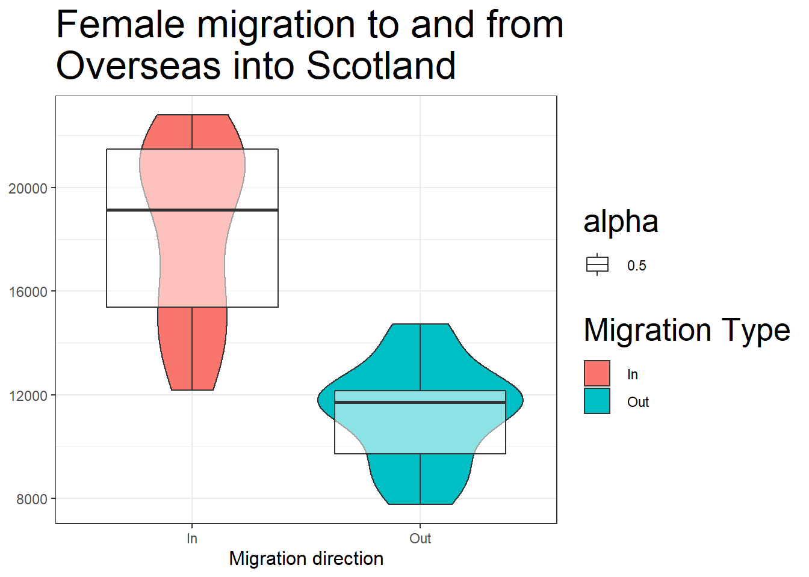
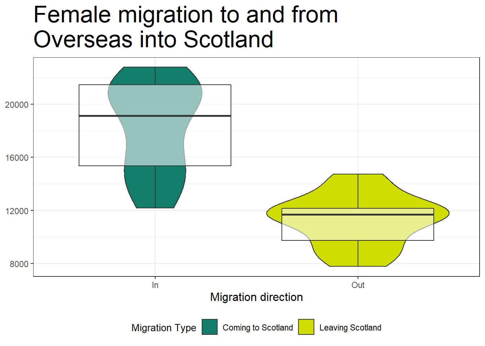

Chapter 8 Data Visualisation 2
8.1 Pre-steps
We will be working with ggplot2 today which is part of tidyverse. Load tidyverse into the library and read the data we will be working with today into our Global Environment.
library(tidyverse)
migration_scot <- read_csv("free_movement_uk.csv") #downloaded from the Scottish Government Stats website8.2 Re-introduction to the data
This data is provided freely from the Scottish Government, and it introduces the flow of people at different ages and sex into and out of the Scotland. We have several variables to work with:
| Variable | Description |
|---|---|
| FeatureCode | codes given by the Scottish Governemnt |
| DateCode | Year of data collected |
| Measurement | what type of measurment it is (Here we have only counts) |
| Units | units(here we have only people) |
| Value | The actual counts |
| Age | Age of the counted people (Separate age, and total) |
| Sex | sex of the counted people (separate sex and total) |
| Migration Source | Where or from the people are comming from ( Overseas, RUK) |
| Migration Type | whether people are comming or leavin ( In or OUT and Net) |
traffic_scot <- migration_scot %>%
filter( Age == 'All') %>%
select(DateCode, Value, Sex, `Migration Source`, `Migration Type`) %>%
filter(DateCode == '2016', `Migration Type`!='Net', Sex != 'All')8.3 Create multiple plots in one
Sometimes we have way too many varables and they are all important. But you should always avoid having too busy plots. They get too confusing, and it is easier for people to misinterpret them.
There are two ways to create mltiple plots.
8.3.1 Select the data before hand and create different plots.
Simple Task: 1. Select only data relevant for movement to and from the rest of the UK
rest_of_uk <- NULLrest_of_uk <- traffic_scot %>%
filter(`Migration Source` == 'To-from Rest of UK')- Plot only this data
ggplot(NULL) + NULLggplot(rest_of_uk, aes(x = Sex, y = Value, fill = `Migration Type`)) +
geom_col(position = 'dodge')
- Now plot only the data for the movement to and from Overseas.
overseas <- NULL
ggplot(NULL) + NULLoverseas<- traffic_scot %>%
filter(`Migration Source` == 'To-from Overseas')
ggplot(overseas, aes(x = Sex, y = Value, fill = `Migration Type`)) +
geom_col(position = 'dodge')
This becomes very cumborsome when we have more than one variable. Imagine you have data for 10 different countries. Can you imagine doing these plots by hand. And even more, when you have to arrange them on a page to show how things differ. Instead we can use facets.
8.3.2 Facets
Facets allow us to create separate plots without manually separating the data. Moreover we can specify how we want to put the plots in a grid: do we want them side by side or one on top of each other, etc.
We can use several facet functions.
facet_grid(variable_to_split_by)allows to structure rows and coumns of graphs based on a third variablefacet_grid(.~variable)creates columns - i.e. side by side panelsfacet_grid(variable~.)creates rows - i.e. one on top of the otherfacet_grid(variable1~variable2)creates rows based on variable1 and columns based on variable1
facet_wrap(variable)creates a grid with rectangular slots for the plots based on your variables
ggplot(traffic_scot, aes(x = Sex, y = Value, fill = `Migration Type`)) +
geom_col(position = 'dodge') +
facet_grid(.~`Migration Source`)
8.4 Global and Local aesthetics
So far we have been working with Global definition of the aesthetics. This allows us to specify the axes and the groupings only once.
Sometimes, we want to use multiple data and put multiple plots on top of each other. For these occasions we can specify the aesthetics at a local level - i.e. in the geoms
If you remember from last week, we specified both the colour and the shape in our ggplot() when we were making the line graph. The geom_line() inherited the colour but not the shape argument. If we howevver have two geoms that share the same characteristics but we do not want to have the same colours we can move them to each of the geom instead of specifying them in ggplot()
Let’s redo the violins and boxplots from last week and put them together. This time we will give them some colour. We will colour the violings and make the boxplots transparent.
boxes <- migration_scot %>%
filter(Sex == 'Female',
`Migration Source` == 'To-from Overseas',
Age == 'All',
`Migration Type` != 'Net')
#make violin plots
ggplot(boxes, aes(x = `Migration Type`, y = Value)) +
geom_violin(aes(fill = `Migration Type`)) +
geom_boxplot(aes(alpha = 0.5))
Because alpha (the transparency argument) is an argument for both box plots and violins, and so is fill, if we had put them in the ggplot() layer they would both be inheritted by the two geoms.
8.5 Themes: Making your plots pretty: looking the way you want them to
The great thing about making your own plots in R is that you can make it look the way you want it to look. Even better, if you are writing a paper, graphs are easy to adjust to match journal’s criteria. We are going to adjust the look of our graph.
8.5.1 Ready made themes
ggplot comes withsevral ready made themes. Some of them are:
theme_bw(): a white background with major axes and border. theme_minimal(): a white background with major axes and more. Just use the cheetsheet for visualisations with ggplot for some more example.
ggplot(boxes, aes(x = `Migration Type`, y = Value)) +
geom_violin(aes(fill = `Migration Type`)) +
geom_boxplot(aes(alpha = 0.5)) +
theme_bw()
8.6 Adding Axes titles and headings
Next off lets add some titles and better labels with labs()
ggplot(boxes, aes(x = `Migration Type`, y = Value)) +
geom_violin(aes(fill = `Migration Type`)) +
geom_boxplot(aes(alpha = 0.5)) +
theme_bw()+
labs(title = 'Female migration to and from Overseas into Scotland', x = 'Migration direction', y = 'Number of people')
Sometimes wee need the titles to be specific size. We can change all of that in an additional theme() layer. We specify the argument we want to change and what we need to change. In our case we want to change the size of the text of the x axis title to size of 12pt, and the graph title to 20pt. But let’s pretend we do not want the y axis title, we can also specify this in the theme() layer. We do this by specifying element_text() and element_blank(). Simply, for that element of the plot, what do we want to change - text and to make it blank.
ggplot(boxes, aes(x = `Migration Type`, y = Value)) +
geom_violin(aes(fill = `Migration Type`)) +
geom_boxplot(aes(alpha = 0.5)) +
theme_bw()+
labs(title = 'Female migration to and from\nOverseas into Scotland', x = 'Migration direction', y = 'Number of people') +
theme(
axis.title.x = element_text(size = 12),
title = element_text(size = 20),
axis.title.y = element_blank()
)
8.7 Changing colours
We can rely on the colour schemes automatically, or we can manually specify colours. To change any of the colours we need to specify which scale we are changing. This is done by specifying the aesthetic i.e. scale_fill_manual(). instead of using names, you can use any hex colour you want.
ggplot(boxes, aes(x = `Migration Type`, y = Value)) +
geom_violin(aes(fill = `Migration Type`)) +
geom_boxplot(aes(alpha = 0.5)) +
scale_fill_manual(values = c('#127d69', '#cedc00')) +
theme_bw() +
labs(title = 'Female migration to and from\nOverseas into Scotland', x = 'Migration direction', y = 'Number of people') +
theme(
axis.title.x = element_text(size = 12),
title = element_text(size = 20),
axis.title.y = element_blank()
)
8.8 Legends
Now let’s change the legend labels and hide the legend associated with the box plots. Let’s also move the legent to the bottom of the graph. We do this in the theme() layer as well. However because we have more than one legend, everything we do will be applied to both legends. This is a good idea for consistency. But when we want to hide one of the legends, we have to specify that in the geom itself using the argument show.legend.
ggplot(boxes, aes(x = `Migration Type`, y = Value)) +
geom_violin(aes(fill = `Migration Type`)) +
geom_boxplot(aes(alpha = 0.5), show.legend = FALSE) +
scale_fill_manual(values = c('#127d69', '#cedc00'),
labels = c('Comming to Scotland','Leaving Scotland')) +
theme_bw() +
labs(title = 'Female migration to and from\nOverseas into Scotland', x = 'Migration direction', y = 'Number of people') +
theme(
axis.title.x = element_text(size = 12),
title = element_text(size = 20),
axis.title.y = element_blank(),
legend.position = 'bottom',
legend.title = element_text(size = 10)
)
8.9 Changing axes ticks
Now however we also need to change what is stated on our x axis to match the legend. We use scale_x_discrete() to give new names in graph, so that we do not have to change our dataset.
ggplot(boxes, aes(x = `Migration Type`, y = Value)) +
geom_violin(aes(fill = `Migration Type`)) +
geom_boxplot(aes(alpha = 0.5), show.legend = FALSE) +
scale_fill_manual(values = c('#127d69', '#cedc00'),
labels = c('Comming to Scotland','Leaving Scotland')) +
scale_x_discrete(labels = c('In' = 'Comming to Scotland', 'Out' = 'Leaving Scotland')) +
theme_bw() +
labs(title = 'Female migration to and from\nOverseas into Scotland', x = 'Migration direction', y = 'Number of people') +
theme(
axis.title.x = element_text(size = 12),
title = element_text(size = 20),
axis.title.y = element_blank(),
legend.position = 'bottom',
legend.title = element_text(size = 10)
)
Lets also say that we are plotting data which is continous but we want to show each of the values. For example we have years and we want to show every year. Ggplot will try and skip some of the years to make the graph look neater. There are several ways we can change that. We can either make the variable into a factor or a character so that ggplot will be forced to look at it as a discrete variable or we can change the ticks of the x axis by giving them limits and skipping length.
ggplot(boxes, aes(x = `Migration Type`, y = Value)) +
geom_violin(aes(fill = `Migration Type`)) +
geom_boxplot(aes(alpha = 0.5), show.legend = FALSE) +
scale_fill_manual(values = c('#127d69', '#cedc00'),
labels = c('Comming to Scotland','Leaving Scotland')) +
scale_x_discrete(labels = c('In' = 'Comming to Scotland', 'Out' = 'Leaving Scotland')) +
theme_bw() +
labs(title = 'Female migration to and from\nOverseas into Scotland', x = 'Migration direction', y = 'Number of people') +
theme(
axis.title.x = element_text(size = 12),
title = element_text(size = 20),
axis.title.y = element_blank(),
legend.position = 'bottom',
legend.title = element_text(size = 10)
)
8.10 Summative Homework
The fourth summative assignment is available on moodle now.
Good luck.
Check that your Rmd file knits into a html file before submitting. Upload your Rmd file (not the knitted html) to moodle.